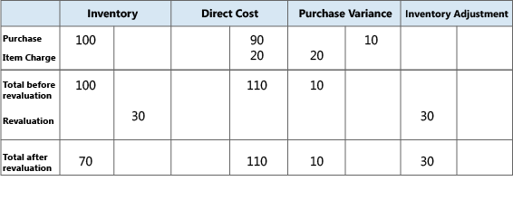
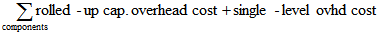

Designdetails: Abweichung
Abweichung wird als Differenz zwischen den Ist-Kosten und Einstandspreis (fest) definiert, wie in der folgenden Formel beschrieben.
tatsächliche Kosten – Standardkosten = Abweichung
Wenn sich die Ist-Kosten ändern, etwa, weil Sie an einem späteren Datum eine Artikeländerung buchen, wird die Abweichung entsprechend aktualisiert.
Hinweis
Die Neubewertung hat keinen Einfluss auf die Abweichungsberechnung, da die Neubewertung nur den Bestandswert ändert.
Beispiel
Im folgenden Beispiel wird veranschaulicht, wie die Abweichung für Einkaufsartikel berechnet wird. Die basiert auf dem folgenden Szenario:
- Der Benutzer kauft einen Artikel zu MW 90,00 ein, aber der Standardpreis ist MW 100,00. Entsprechend ist die Einkaufsabweichung MW -10,00.
- MW 10,00 wird dem Einkaufsabweichungskonto gutgeschrieben.
- Der Benutzer erzeugt einen Artikel Zu-/Abschlag von MW 20,00. Entsprechend werden die Ist-Kosten auf MW 110,00 erhöht, und der Wert der Einkaufsabweichung wird MW 10,00.
- MW 20,00 werden dem Einkaufsabweichungskonto belastet. Entsprechend wird die Nettoeinkaufsabweichung MW 10,00.
Der Benutzer bewertet den Artikel um von MW 100,00 auf MW 70,00. Dies hat keinen Einfluss auf die Abweichungsberechnung, nur auf den Bestandswert.
Die folgende Tabelle zeigt die sich daraus ergebenden Wertposten.

Bestimmen der Standardkosten
Die Standardkosten werden verwendet, wenn die Abweichung und der zu nutzende Betrag berechnet werden. Da sich die Standardkosten aufgrund manueller Aktualisierungsberechnungen ändern können, benötigen Sie einen Zeitpunkt, an dem die Standardkosten für die Abweichungsberechnung fest sind. An diesem Punkt wird der Lagerzugang fakturiert. Für gefertigt oder montierte Artikel, ist der Zeitpunkt, an dem die Standardkosten bestimmt werden, der der Kostenanpassung.
Die nachstehende Tabelle zeigt, wie verschiedene Kostenanteile für produzierte und montierte Artikel berechnet werden, wenn Sie die Funktion zur Berechnung der Standardkosten verwenden.
| Kostenanteil | Gekaufter Artikel | Erzeugter/Montierter Artikel |
|---|---|---|
| Einstandspreis (fest) | Einstufige Materialkosten + Einstufige Kapazitätskosten + Einstufige Fremdarbeitskosten + Einstufige Kap.-Gemeinkosten + Einstufige Prod.-Gemeinkosten | |
| Einstufige Materialkosten | Einstandspreis |  |
| Einstufige Kapazitätskosten | Nicht anwendbar |  |
| Einstufige Fremdarbeitskosten | Nicht anwendbar |  |
| Einstufige Kap.-Gemeinkosten | Nicht anwendbar |  |
| Einstufige Prod.-Gemeinkosten | Nicht anwendbar | (Einstufige Materialkosten + Einstufige Kapazitätskosten + Einstufige Fremdarbeitskosten) * Indirekte Kosten %/100 + Gemeinkostensatz |
| Mehrstufige Materialkosten | Einstandspreis |  |
| Mehrstufige Kapazitätskosten | Nicht anwendbar |  |
| Mehrstufige Fremdarbeitskosten | Nicht anwendbar |  |
| Mehrstufige Kapazitätsgemeinkosten | Nicht anwendbar |  |
| Mehrstufige Prod.-Gemeinkosten | Nicht anwendbar |
Weitere Informationen
Designdetails: Lagerkostenberechnung
Designdetails: Kostenmethoden Verwalten der Lagerregulierung
Finanzen
Arbeiten mit Business Central
Kostenlose E-Learning-Module für Business Central finden Sie hier